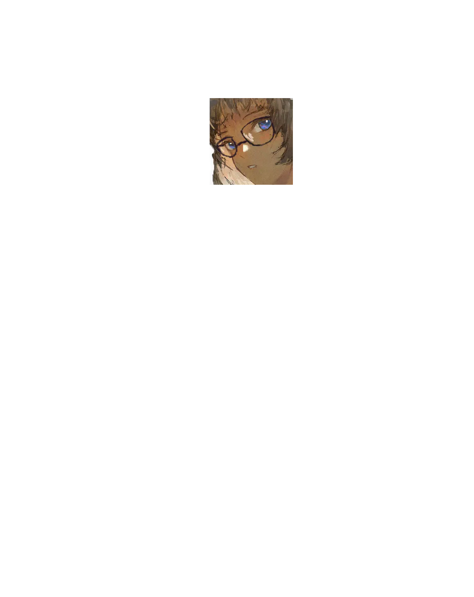
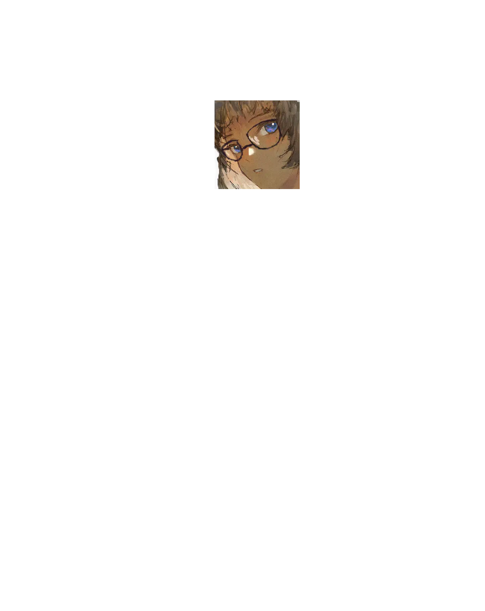

>
My name is Melissa Welcome!
Who am I?
I'm a PNGTuber | webdeveloper | photographer | mineral enthusiast | undergraduate in disaster crisis management interested in programming, linguistics, philosophy, astrophysics, nuclear reactors, meteorology and science.
Languages
Can speak: English, Russian, Japanese, German
Learning: Swedish, Finnish, Indonesian, Estonian.
Skills
My major skills are:
OSINT, , Social Engineering, Networking, Languages, Translation, Writing, Crisis Management, Video editing, Geography, Memorisation, Teambuilding,
My minor skills are:
Music (Trumpet, Piano, Harmonica), Trades (Electrical, Construction, Automechanics), Meteorology, System administration, IT
Projects
|-> fsq&friends - My webring
|-> projekt STIMME - My web based recreation of Gerat 32620 (WIP)
I'm a PNGTuber | webdeveloper | photographer | mineral enthusiast | undergraduate in disaster crisis management interested in programming, linguistics, philosophy, astrophysics, nuclear reactors, meteorology and science.
Can speak: English, Russian, Japanese, German
Learning: Swedish, Finnish, Indonesian, Estonian.
My major skills are:
OSINT,
Art(Photography, Pixel art, Digital drawing, Visual design)
,
Programming(C, C++, Python, JS, HTML+CSS)
Typing
150wpm 15s
My minor skills are:
Music (Trumpet, Piano, Harmonica), Trades (Electrical, Construction, Automechanics), Meteorology, System administration, IT
Projects

 
